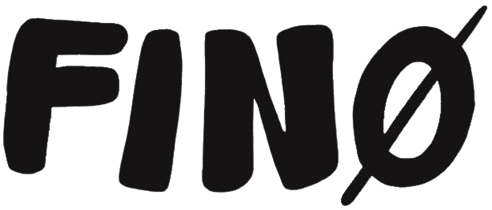

areyouFINØ (a.k.a “FINØ”) is a passion project turned clothing line that I started in 2024. Originally being a creative outlet for a variety of mediums, FINØ started as a way to put my physical artwork and illustrations onto upcycled clothing to share with my close friends and family. What started as an experiment quickly became a creative identity that could represent my passions and my interests. FINØ is a collection of works ranging from visual arts, graphic design, photography, film, and fashion. FINØ releases clothing on a drop-by-drop basis; I create a “season” that incorporates a story and theme, which becomes the baseline for the works and pieces that are made. I want to share my experiences and points of view that can become relatable for the consumer and allow them to form their own connections and opinions with the work. Over the past two years, I’ve created three seasons that represent my own life experiences, and I create one-of-one clothing pieces that reflect those ideas for people to wear and see themselves in.

areyoufino@gmail.com